Assembly Instructions
This page serves as a comprehensive guide for the preparation of the benchmark. It
includes a detailed parts and tools list and step-by-step assembly instructions to ensure a
smooth and efficient process.
The necessary parts are divided into 3D-printed parts and bought parts. These are international
available e.g. through MISUMI. The parts are also available at other suppliers. The wooden plate
can be ordered in a store or machined with corresponding tools. The parts list is classified in
parts needed for the benchmark itself and for the wooden plate.
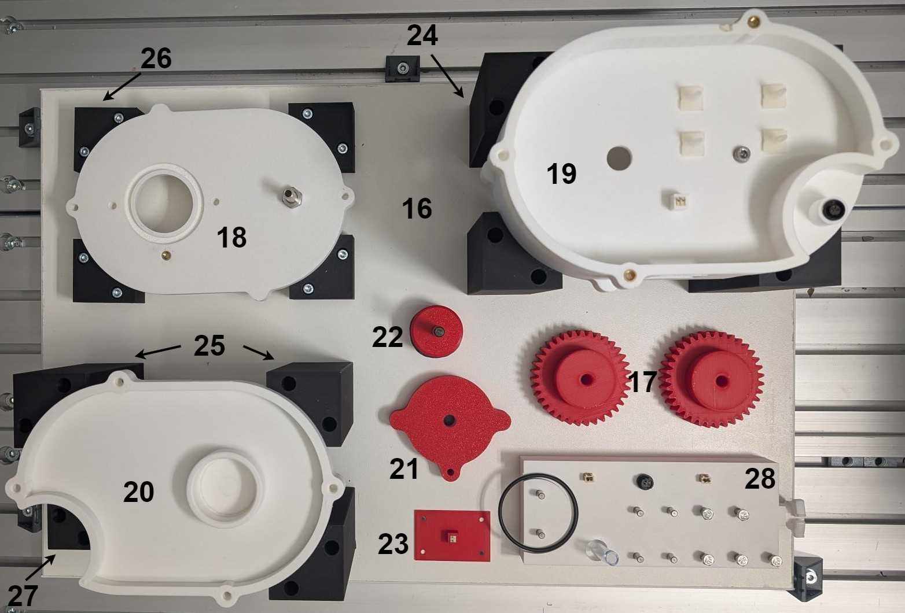
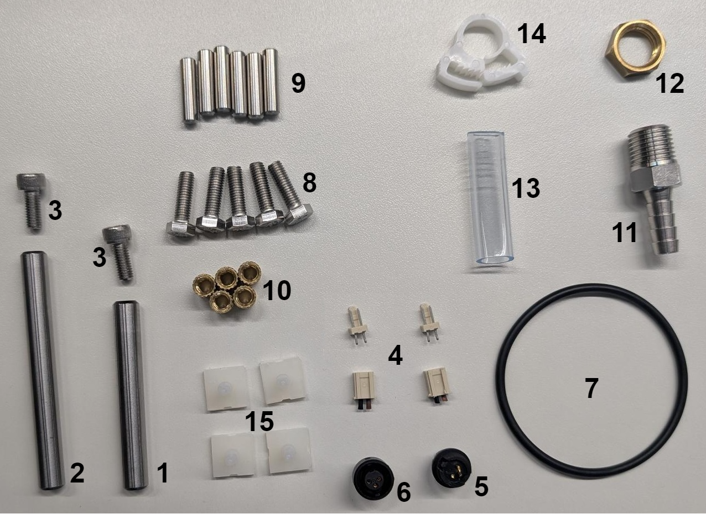
The parts are numbered corresponding to the ids in the parts list, see parts list.
Tools list:
- drill Ø6.5 and Ø8.5
- countersink Ø25
- drilling machine
- soldering iron
- socket wrench set for inner and outer hexagonal head
- permanent marker
Parts supply:
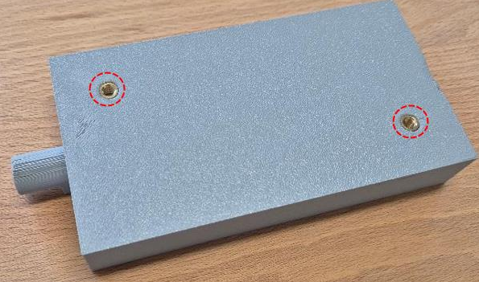
Threaded inserts are fixed with a soldering iron. The parts supply is fixed on the board with two screws (M5x12) and to washers (M5).
Housing middle:
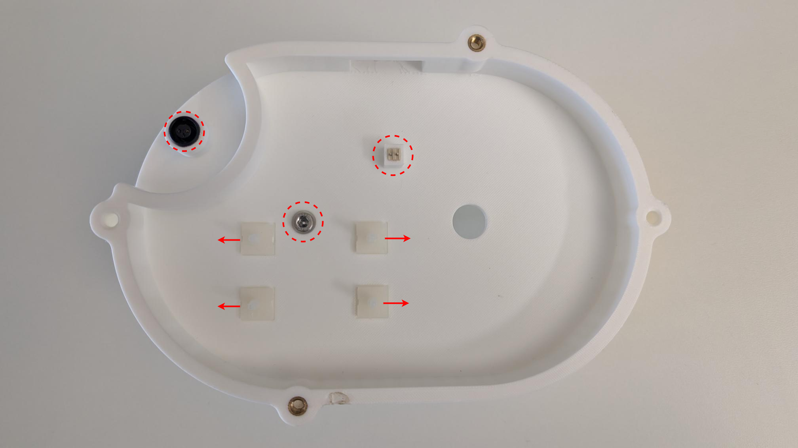
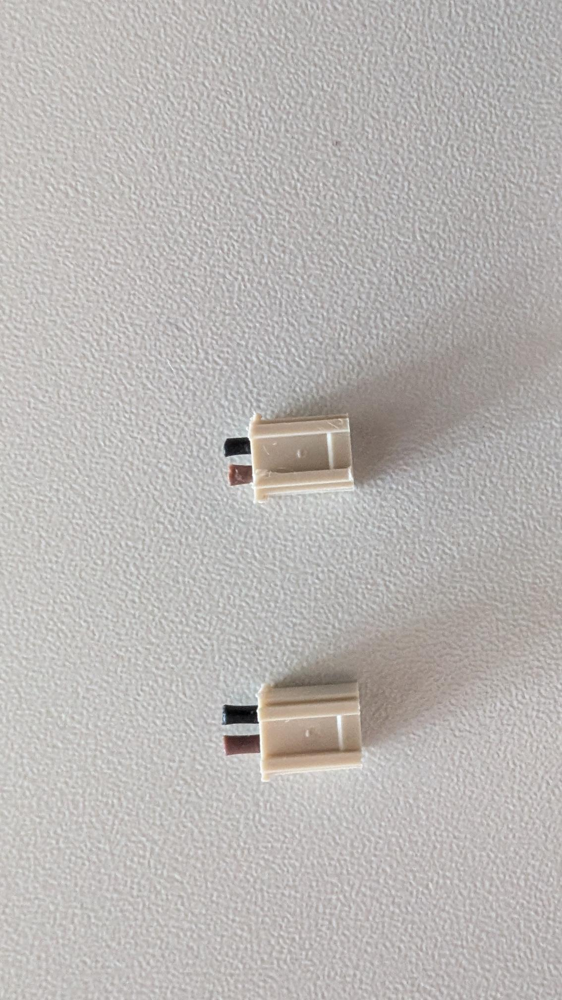
Plugs are separated from the cable.
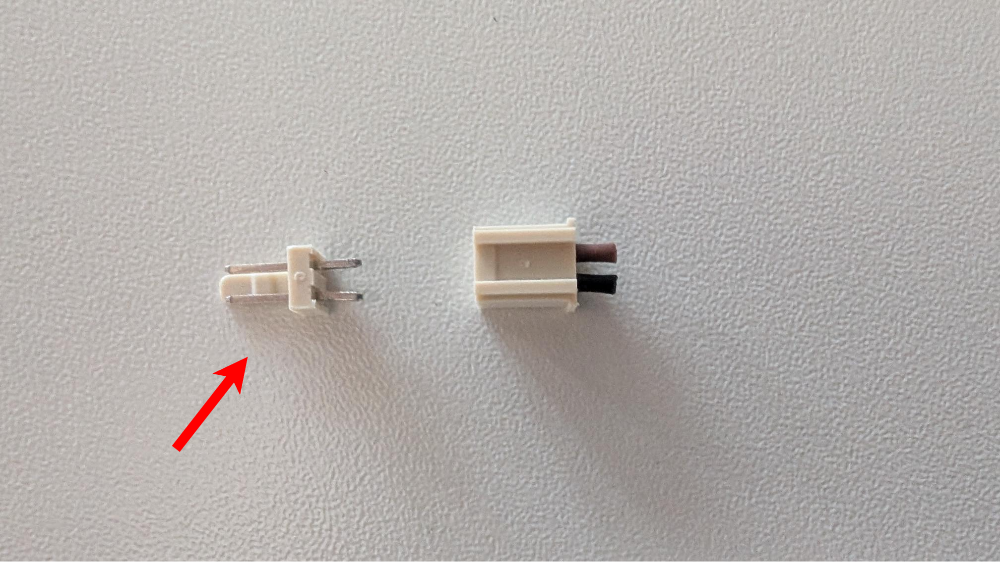
The labeled part of the plug is pressed into the fitting shape of the housing middle.
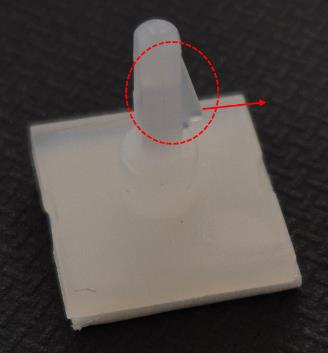
The PCB pins are glued in, with nibs heading outwards.
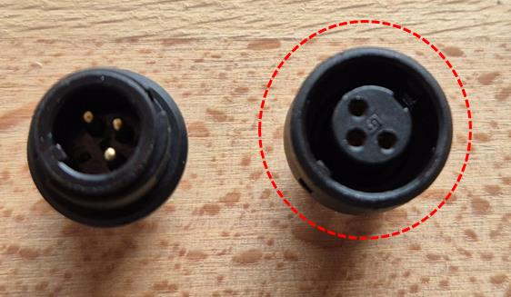
The labeled plug is pressed into the fitting shape of the housing middle.
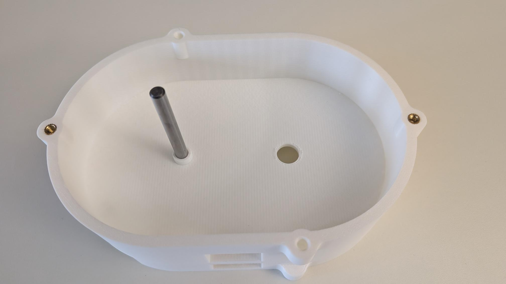
The long bolt (bolt housing middle) is fixed with the screw (M5x12). The threaded insert is fixed as in the parts supply.
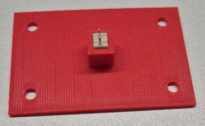
The plug is pressed into the fitting shape of the printed PCB.
Rotor:
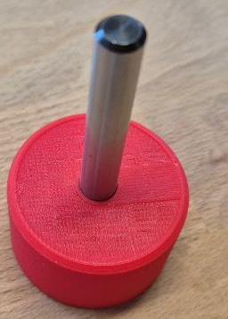
The short bolt (bolt rotor) is fixed with the screw (M5x12).
Housing top:
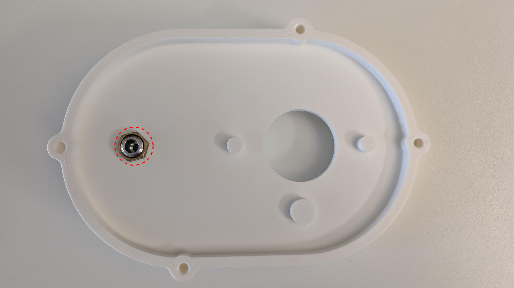
The tube nozzle is fixed with the nut tube nozzle on the housing bottom.
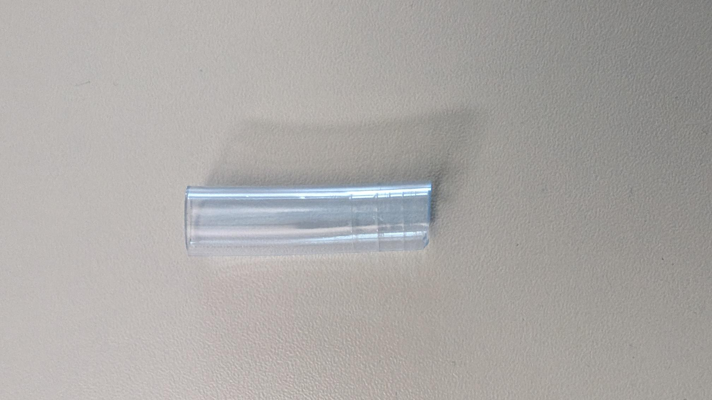
The tube is cut to a length of 40 mm.
Wooden board:
The wooden board is the base of the benchmark, where the components are positioned. Therefore, the board can be provided by a hardware store. Other materials are also possible. The outer dimensions, the boreholes and the positioning marks are shown in the following drawings. These are also available as a PDF file (see the materials page). To tool the board a drill (Ø6.5), a countersink (Ø25) and a drilling machine are needed.
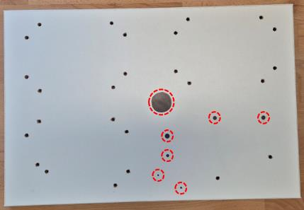
The boreholes have a diameter of 6.5 mm. The labeled points show the positioning marks and are drafted with a permanent marker.
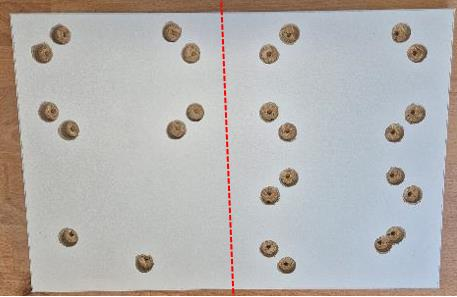
The boreholes are countersunk from the backside. The left holes have a depth of 16 millimeters, the right ones 10 millimeters.
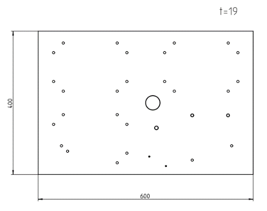
Dimensions of the plate: 400 x 600 x 19
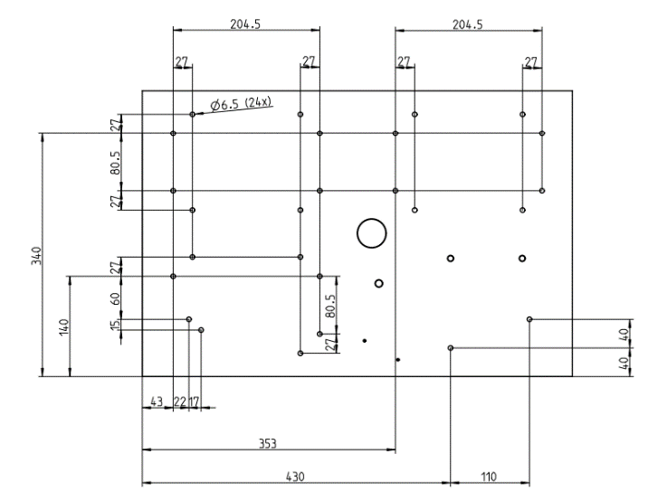
The positions of the boreholes are shown above.
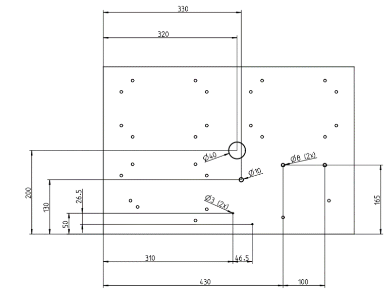
The positions of the positioning marks are shown above.
Fixations:
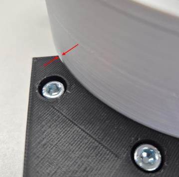
The fixations are bolted by screws of the size M5x20 for fixation_2 and M5x80 for all other fixations together with M5 nuts. The fixations should be aligned using the housings. The fixations and housings should be tightened with a small clearance to ensure smooth handling by the robot.

Position the components on the plate as shown.